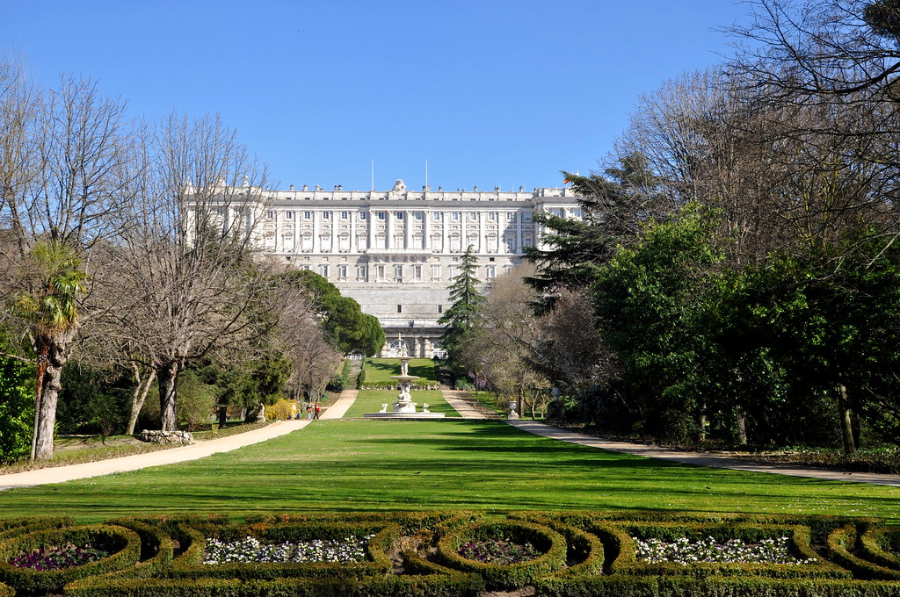

El Palacio Real de Madrid es un magnífico palacio del estilo barroco. Es la residencia oficial del rey de España, aunque la familia real reside en el Palacio de la Zarzuela. Con una superficie de 135 000 metros cuadrados y más de tres mil habitaciones, es el palacio más grande de Europa. Su construcción tuvo lugar entre 1738 y 1755, sobre las ruinas del Alcázar de Madrid, un castillo medieval destruido por un incendio en 1734.
En la fachada principal del palacio se encuentra la Plaza de la Armería, con sus impresionantes columnas y estatuas.
Una de las salas más hermosas es el Salón del Trono, decorado con ricas tapicerías y espejos.
El Salón de Columnas es otra sala destacada del palacio, famosa por sus impresionantes columnas y decoraciones artísticas.
La Capilla Real es un espacio sagrado dentro del palacio, utilizado para ceremonias religiosas y decorado con obras de arte religioso.
Rodeado de magníficos jardines, como los Jardines de Sabatini y el Campo del Moro, el palacio ofrece una vista espectacular desde su fachada oeste.
Además de su función residencial, el Palacio Real de Madrid se utiliza para ceremonias de Estado y eventos oficiales, como recepciones de jefes de Estado extranjeros y la entrega de premios importantes.
Para concluir, el Palacio Real de Madrid no solo es un símbolo de la monarquía española, sino que también tiene un gran valor arquitectónico y artístico, representando siglos de historia y cultura españolas.